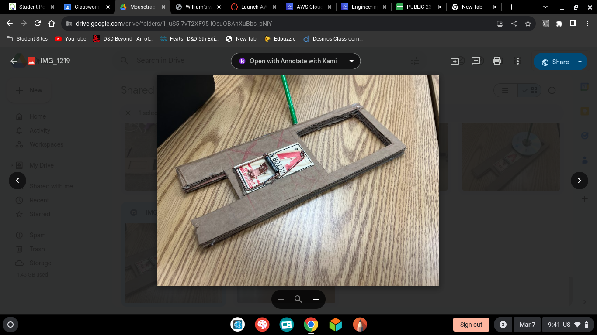
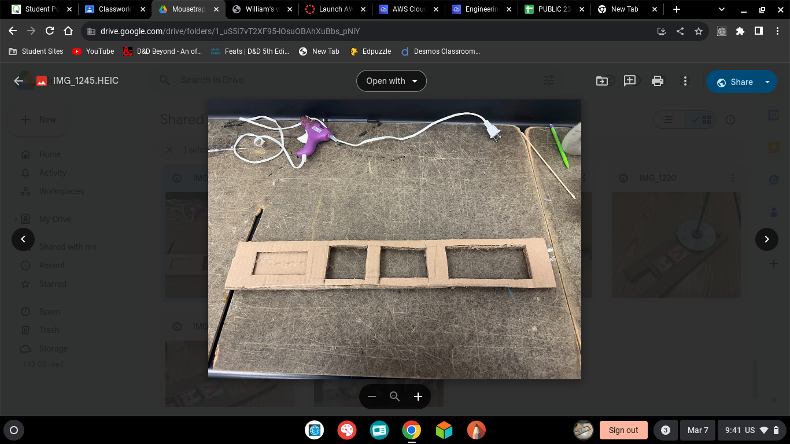

1/26/24- this week we began the car construction project where we began to make either an arduino car or a mousetrap car i began to make a mousetrap car with my nw parnter reza or som as people call him so far its going good we have a few good ideas we will do our bom and finsish our experimenal design and test we have alos found all the eauations we nened to use so we can fully experiment with our car and make sure our desighns will be effetive for our desiered goal of going farther than any and all other mousetrap cars i would alos like to somehow beat one arduino car

well we spent most of our time working to make our first draft of our car so we can check our math and make sure everything works and will make sense so our cars second itearation will work better than evryone elses th goal for this week is to complete car one and begin car two to try and perfect our desighn and be cewl i played lethal company and died alot and had a good time also played dugreed and finsihed the parkour puzzle so yeah

we made a 30 in locng car with intermedite holes in it to reduce weight and to make the car go further we alos made a 17in long rod whcih was used to make our car go its overall length whcih is give or take the whole cafeteria or 55ft our first cars test was used to make sure all math and our ideas were correct which thankfully worked well enough the biggest differnece was size rod length and axel material which gave us our almost double length of our first one if i were to make a third one i would starighten the wheels and add more string to make it go farther and make sure to luanch it corrctly

we are maing and working on secreing an egg drop where we can safely drop an egg form a two stry building using a variety of materical indluing but not limted to paper cardboard and of course tape we have foud out their are two ways to secure our egg to eithe rmake the drop safer or our egg safer we have done both we are allowd to bring a box from home whihc our pryamid will drop into where sticks will catch it this should keep our egg safe as it is also surrond by cotton balls which will cushion its fall from the building teh weakest part would be the grabing sticks brekaing mid flight or the ballos popping whcih will be stopped using

we tried to use a few stargeys ut in the end i belived we overenginnered full style over substance we also missed our catching contration which did really affect how well our egg did overall unlike our desighn the starws had oved so the egg landed cold and hard on the pavment causing the egg to shatter apart which lead to it breaking and leaking all over the place like well an egg over the spring break im going to play teh super duper fun game called palworld where i will enslave and force little beings to work and produce moeny guns and ammo for me to go and kill and capture more little aniamls ill also play torchlight im trying to get to max level and im ony 85 ut i did figure out an easy way yo farm
its going well so far we expect our boat to go aroud 50% of the overall legth we hope to research more and go maybe 60-70% but there is only a small chance we will manage to go the full length but in an ideal world we would its a medium sized boat with a sail the funnest part of my break was plannign out dnd and playing grounded wtth my pooki ethan i hope to maintain my A